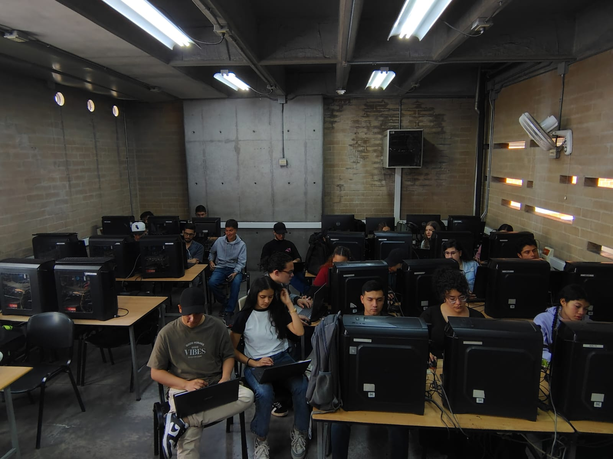

MenteConectada es una plataforma web desarrollada por estudiantes de software con el propósito de fomentar la salud mental en entornos accesibles, seguros y colaborativos. Diseñada para usuarios generales, especialistas en salud mental y servidores públicos, nuestra solución integra tecnología y empatía para ofrecer servicios clave:
✅ Registro y acceso personalizado para cada tipo de usuario.
🧑⚕️ Perfiles profesionales con portafolios y líneas de tiempo de logros.
📅 Publicaciones y gestión de eventos sobre bienestar emocional.
💬 Herramientas de contacto y colaboración entre profesionales y usuarios.
📊 Paneles de estadísticas para visualizar tu progreso y participación.
Con una interfaz amigable, moderna y responsive, nuestra plataforma busca derribar barreras tecnológicas en el acceso a recursos de salud mental. Ya sea que busques apoyo, quieras compartir tu experiencia o colaborar con otros profesionales, aquí encontrarás el espacio ideal para hacerlo.
Este proyecto es desarrollado por un grupo multidisciplinario de estudiantes de software, como parte de un proyecto integrador de primer semestre. Nos une un objetivo común: crear una plataforma que promueva la salud mental desde la tecnología.

🧩 Organización por equipos
Para abordar cada parte del desarrollo de forma eficiente y colaborativa, el equipo se ha dividido en cinco grupos, cada uno enfocado en un módulo específico de la plataforma: